Wild plants you can forage in India
100 wild greens, fruit, roots, grains, nuts and flowers, with when each is in season, where it grows, how to harvest it and what to cook.
Greens
 AmaranthJun–Nov
AmaranthJun–Nov BathuaNov–Mar
BathuaNov–Mar Colocasia leavesJun–Sep
Colocasia leavesJun–Sep CulantroAll year
CulantroAll year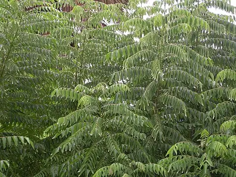
Curry leavesAll year FishwortMar–Jul
FishwortMar–Jul Indian pennywortJun–Oct
Indian pennywortJun–Oct Ivy gourdMar–Nov
Ivy gourdMar–Nov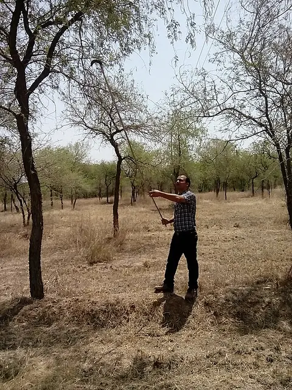
Khejri (sangri)Mar–May Malabar spinachJun–Nov
Malabar spinachJun–Nov MoringaAll year
MoringaAll year PurslaneMar–Sep
PurslaneMar–Sep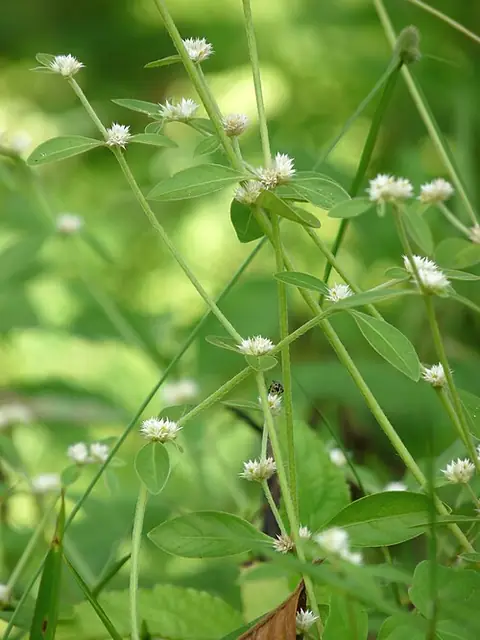
Sessile joyweedAll year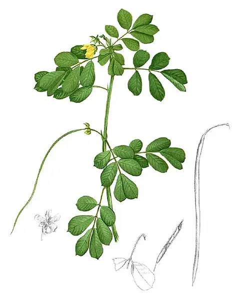
Sickle sennaJun–Aug Spiny amaranthJun–Oct
Spiny amaranthJun–Oct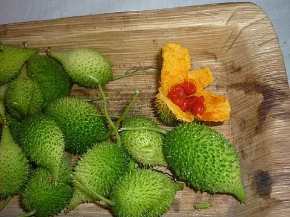
Spiny gourdJul–Sep Stinging nettleFeb–Nov
Stinging nettleFeb–Nov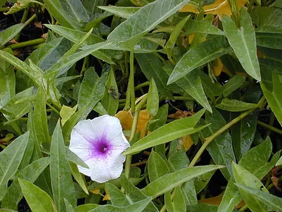
Water spinachJun–Nov Wild banana flower & stemAll year
Wild banana flower & stemAll year Wood sorrelJun–Feb
Wood sorrelJun–Feb
Fruit
 AmlaNov–Feb
AmlaNov–Feb BaelMar–Jun
BaelMar–Jun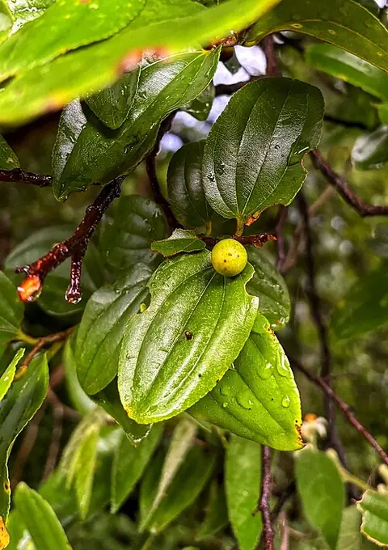
BerDec–Mar Cluster figMar–Aug
Cluster figMar–Aug Elephant appleOct–Jan
Elephant appleOct–Jan Feral guavaAug–Dec
Feral guavaAug–Dec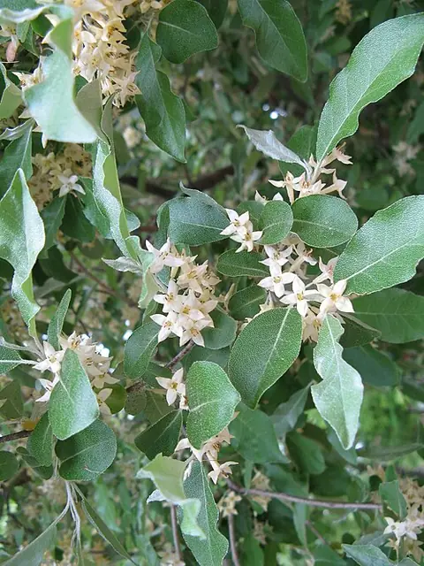
GhainJul–Aug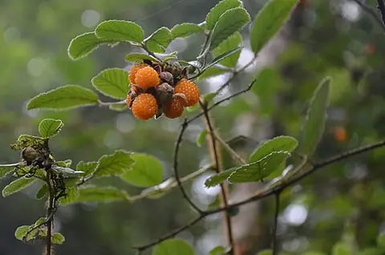
HisaluApr–Jun Hog plumAug–Nov
Hog plumAug–Nov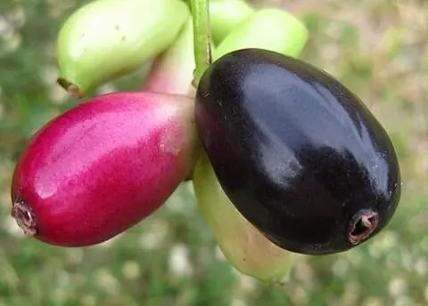
JamunMay–Jul Jungle jalebiMar–May
Jungle jalebiMar–May- KachriOct–Dec
 KafalApr–Jun
KafalApr–Jun KarondaJul–Sep
KarondaJul–Sep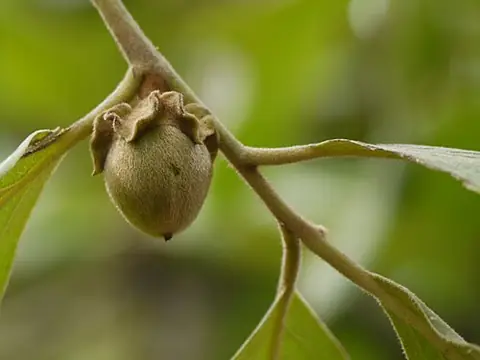
KenduApr–Jun KerApr–Jun
KerApr–Jun KilmoraMay–Jul
KilmoraMay–Jul KokumMar–May
KokumMar–May KusumMay–Jul
KusumMay–Jul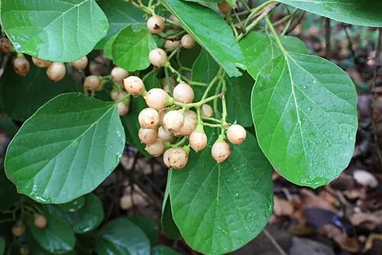
LasodaApr–Jun Malabar tamarindJun–Aug
Malabar tamarindJun–Aug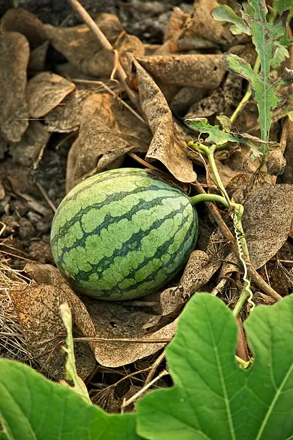
MatiraAug–Oct Monkey jackJun–Aug
Monkey jackJun–Aug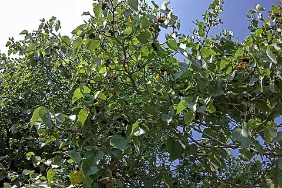
MulberryMar–May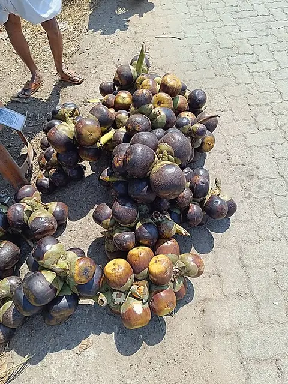
Palmyra palmApr–Jan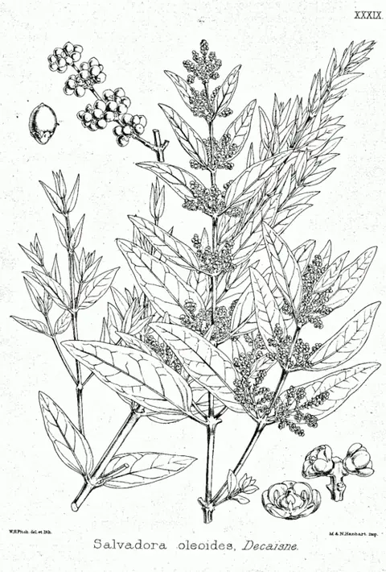
PeeluMay–Jun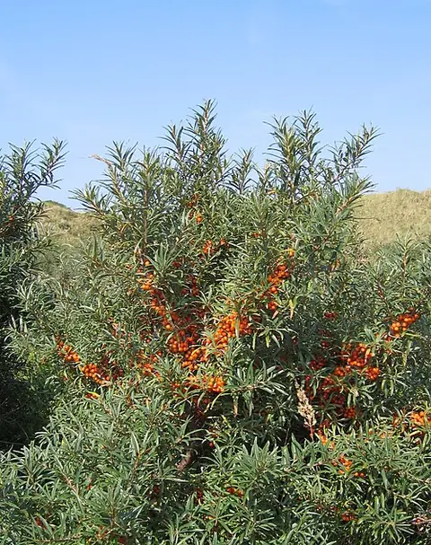
SeabuckthornAug–Oct- SohiongSep–Oct
 TamarindJan–Apr
TamarindJan–Apr TimlaMay–Aug
TimlaMay–Aug Wild Himalayan pearOct–Dec
Wild Himalayan pearOct–Dec Wild apricotJun–Jul
Wild apricotJun–Jul Wild custard appleAug–Nov
Wild custard appleAug–Nov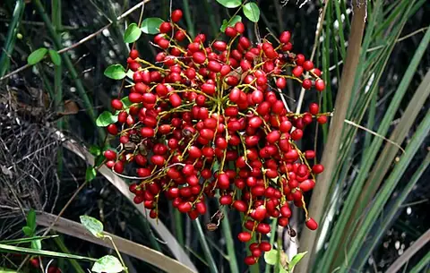
Wild date palmMay–Jul Wild mangoApr–Jun
Wild mangoApr–Jun Wild phalsaMay–Jun
Wild phalsaMay–Jun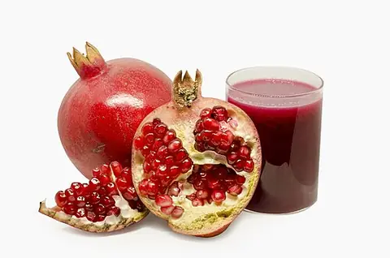
Wild pomegranateSep–Oct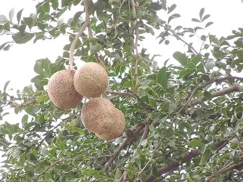
Wood appleOct–Mar
Roots & shoots
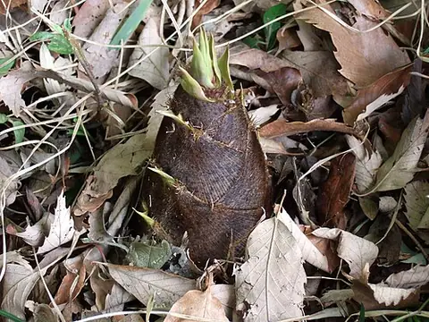
Bamboo shootsJun–Sep Cane shootsJul–Sep
Cane shootsJul–Sep Fiddlehead fernMar–Aug
Fiddlehead fernMar–Aug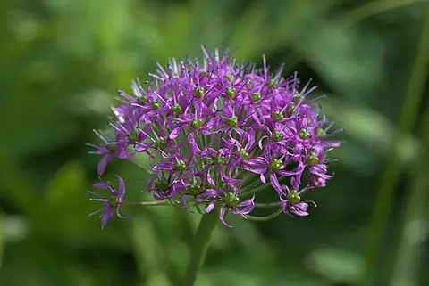
Jambu (Himalayan wild onion)Jun–Aug Lotus stem & seedsOct–Feb
Lotus stem & seedsOct–Feb Palm tuberDec–Jan
Palm tuberDec–Jan TikhurDec–Feb
TikhurDec–Feb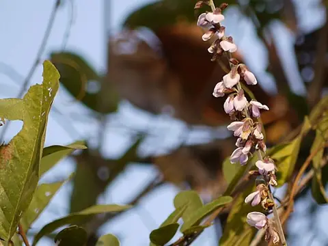
VidarikandNov–Feb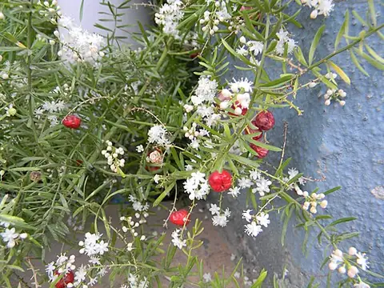
Wild asparagus shootsJun–Aug Wild elephant foot yamNov–Mar
Wild elephant foot yamNov–Mar Wild taro cormsOct–Feb
Wild taro cormsOct–Feb Wild yamOct–Feb
Wild yamOct–Feb
Grains & pulses
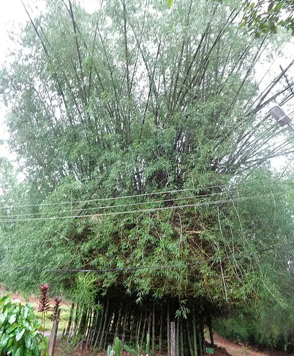
Bamboo riceMar–May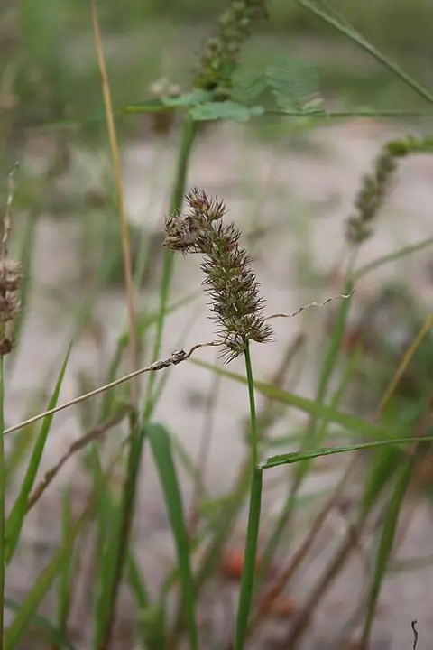
BhuratSep–Oct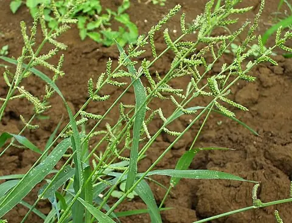
Jungle riceSep–Nov KumatNov–Jan
KumatNov–Jan Rice beanOct–Dec
Rice beanOct–Dec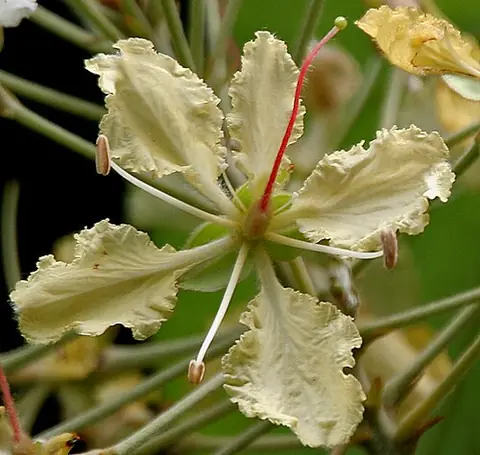
Siali seedsMar–May Velvet beanNov–Feb
Velvet beanNov–Feb- Water lily seedsOct–Jan
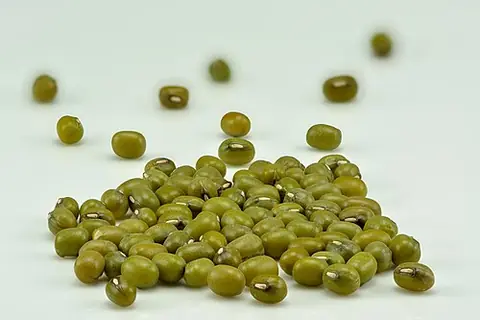
Wild mungOct–Dec Wild riceOct–Dec
Wild riceOct–Dec
Starchy foods
Protein
 Clams & shellfishOct–Mar
Clams & shellfishOct–Mar Paddy crabsJul–Oct
Paddy crabsJul–Oct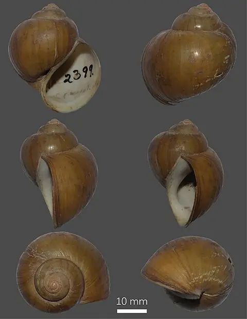
Paddy snails & small fishJul–Nov Red ant chutneyAll year
Red ant chutneyAll year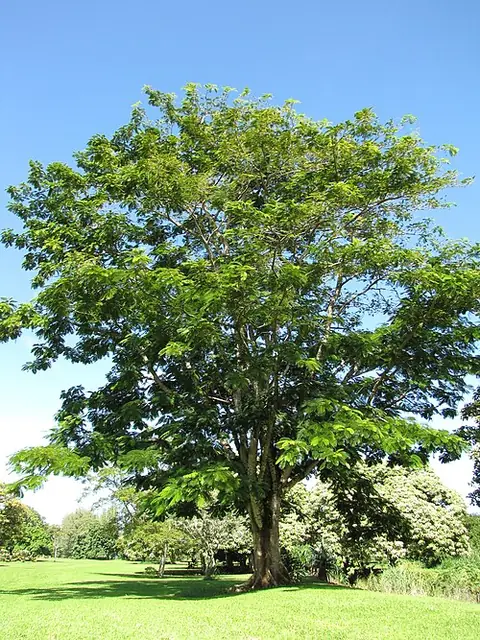
Tree beanNov–Mar
Nuts & seeds
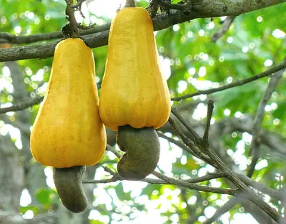
Cashew apple & nutMar–May Chilgoza pine nutsSep–Oct
Chilgoza pine nutsSep–Oct ChironjiApr–May
ChironjiApr–May Indian almondJul–Dec
Indian almondJul–Dec MakhanaAug–Oct
MakhanaAug–Oct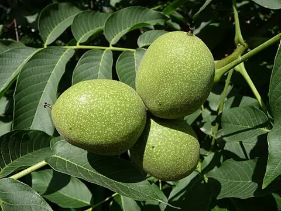
WalnutSep–Oct
 MahuaMar–Jun
MahuaMar–Jun PhogMar–Apr
PhogMar–Apr